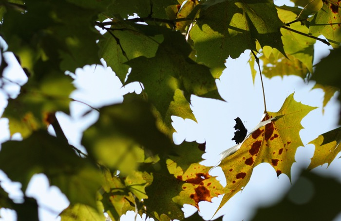

Next Photo
-
Vote
Shadowy Butteryfly
This silhouette of a butterfly was captured in my backyard on a brisk fall day. The outline of the butterfly can be seen against the sky and the green of the leaves is pleasant against the blue of the air. The light on the leaves gives the the photo a warm sunny mood. The light source was almost above the butterfly which caused the leaves to catch the light and the butterfly to be dark. This photo appeals to me because butterflies are seen as light loving and this one is in the shadows. It is quite a simple photo. The leaves of the tree also frame the butterfly with shadows.
More...
ID: 68
Title: Shadowy Butteryfly
Description: This silhouette of a butterfly was captured in my backyard on a brisk fall day. The outline of the butterfly can be seen against the sky and the green of the leaves is pleasant against the blue of the air. The light on the leaves gives the the photo a warm sunny mood. The light source was almost above the butterfly which caused the leaves to catch the light and the butterfly to be dark. This photo appeals to me because butterflies are seen as light loving and this one is in the shadows. It is quite a simple photo. The leaves of the tree also frame the butterfly with shadows.
Keywords: butterfly leaves light tree silhouette shadow
Hidden: n
Date added: Thu Nov 08 13:40:38 CST 2007
Date taken: Fri Oct 05 00:13:31 CDT 2007
Camera: Canon EOS DIGITAL REBEL XT.
Resolution: 3068x1996
Mode: 0
Shutter speed: 697556/65536
Flash: 16
Exposure time: 1/1600
Iso: 100
Metering: 5
Aperture: 262144/65536
Focal length: 85/1
Artist: NathanielGuy Mahieu
Copyright: 2007 NathanielGuy Mahieu
Views: 657